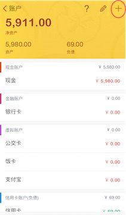

如何添加账户
我们记账的时候，资产都是通过账户来体现。记录消费、收入时都需要使用账户。如何添加账户呢？
1、 点击首页底部菜单的【账户】，进入账户界面；(图 2.4.1)
 图 2.4.1
图 2.4.12、 点击右上角的【+】，进入添加账户的界面，选择账户类型，设定账户名称、类型，点击保存，即可生成一个新账户。(图 2.4.2)
图 2.4.2
我们记账的时候，资产都是通过账户来体现。记录消费、收入时都需要使用账户。如何添加账户呢？
1、 点击首页底部菜单的【账户】，进入账户界面；(图 2.4.1)
图 2.4.12、 点击右上角的【+】，进入添加账户的界面，选择账户类型，设定账户名称、类型，点击保存，即可生成一个新账户。(图 2.4.2)
1、 点击首页底部菜单，进入【账户】界面后，点击右上角铅笔图标，即可对账户进行【删除】、【隐藏】、【排序】。(图 2.4.3)
2、 如需编辑某个账户的信息，如账户名，在进入【账户】界面后，点击该账户，进入该账户的详情界面，点击右上角的【设置】图标，即可进入账户信息编辑界面。 此时点击右上角【+】按钮，可快速在该账户记一笔。 (图 2.4.4)